@geonews_urdu
📝 原文: Bangladesh suffer upset defeat on home ground, former cricketers and Australian media lash out at team
🇨🇳 译文: 孟加拉国在主场遭遇惨败，前板球运动员和澳大利亚媒体猛烈抨击球队

🕒 2026-08-16T08:27:18+00:00
| 来源 | 旧窗口内数量 | 本次新增 | 本次淘汰 | 当前窗口内共有 |
|---|---|---|---|---|
| 推文 + Dawn 新闻 | 0 | 22 | 0 | 22 |
| ARY News | 0 | 0 | 0 | 0 |
注：淘汰数 = 旧窗口内数量 + 本次新增 - 当前窗口内共有
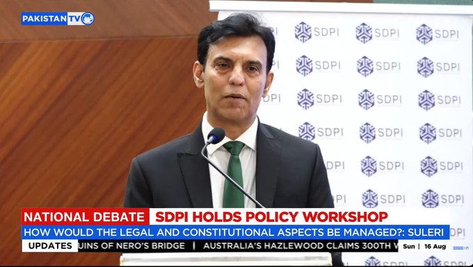
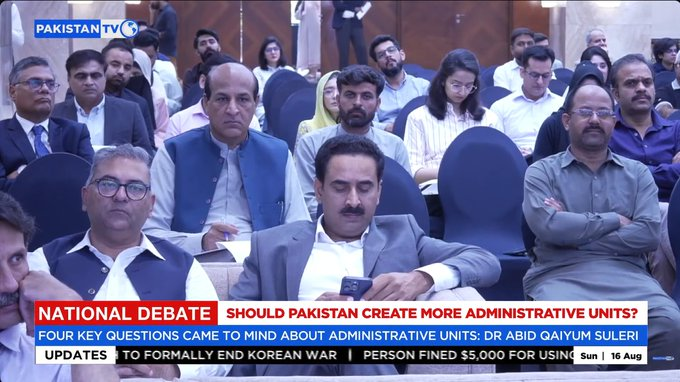
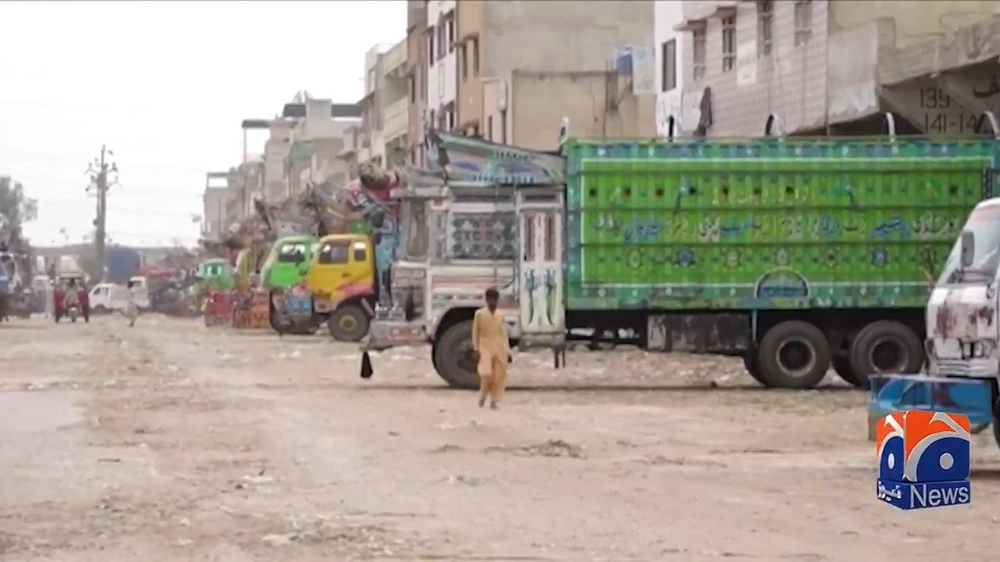
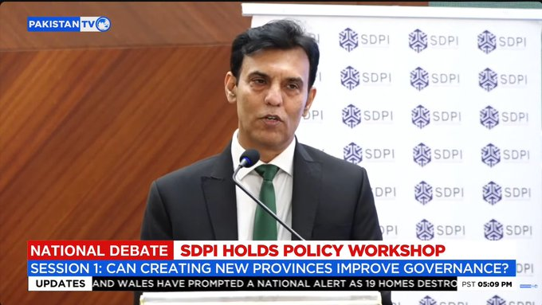
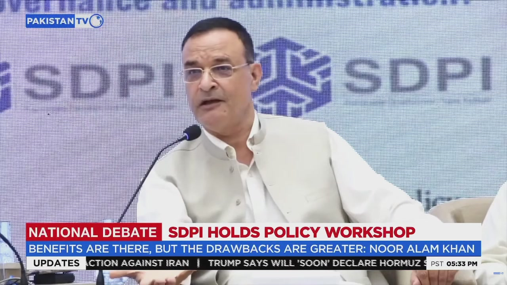
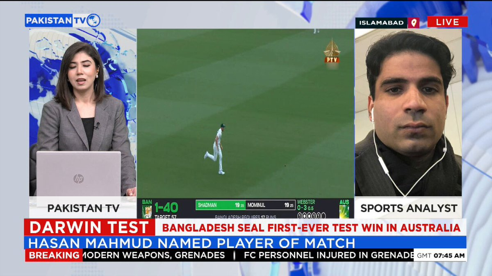
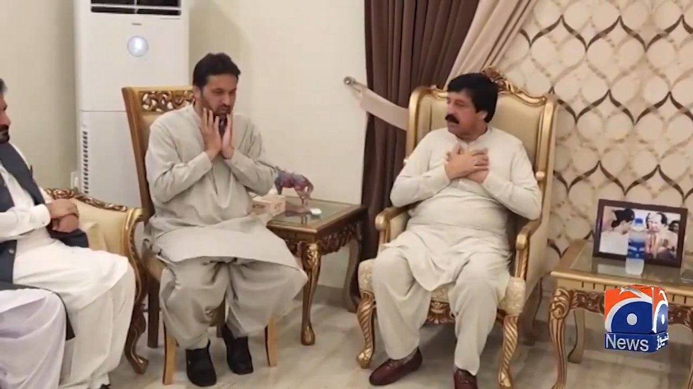
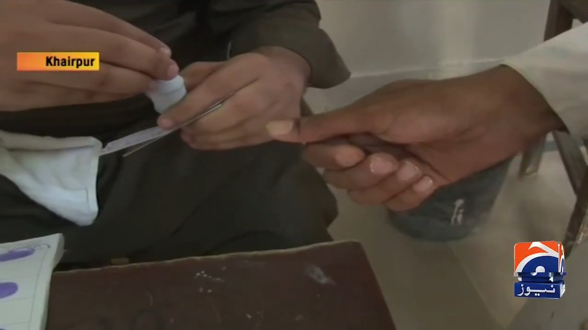
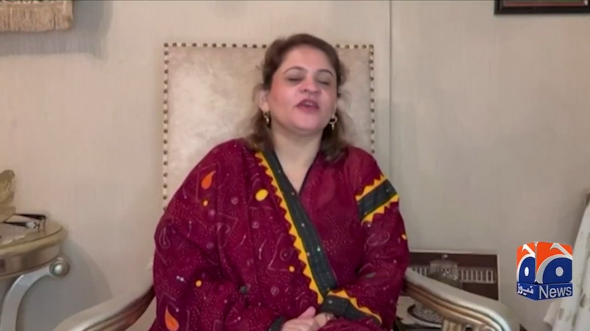
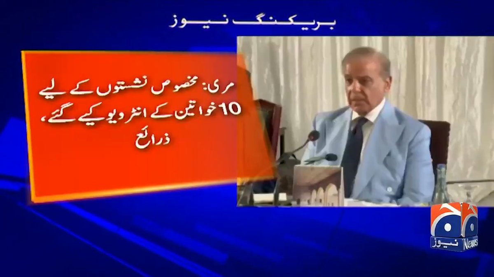
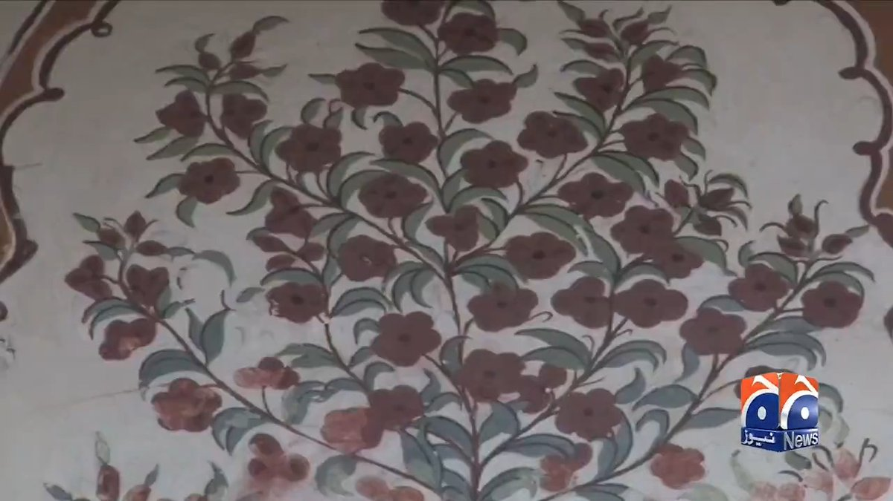


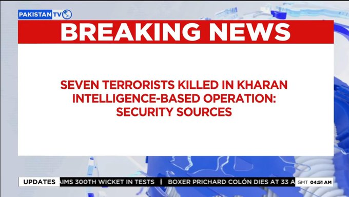
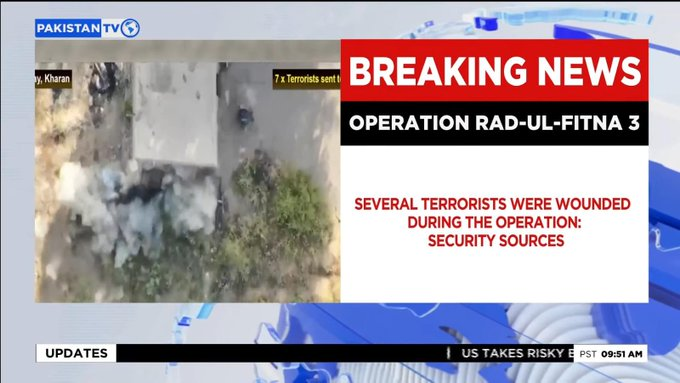
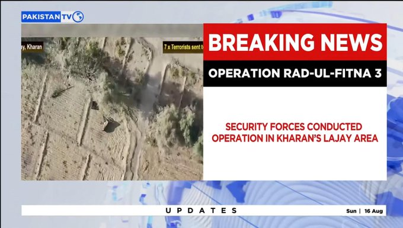
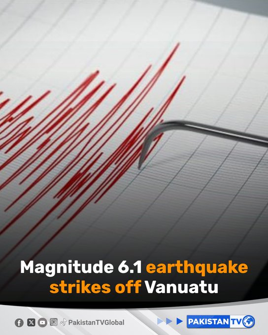
暂无文章。